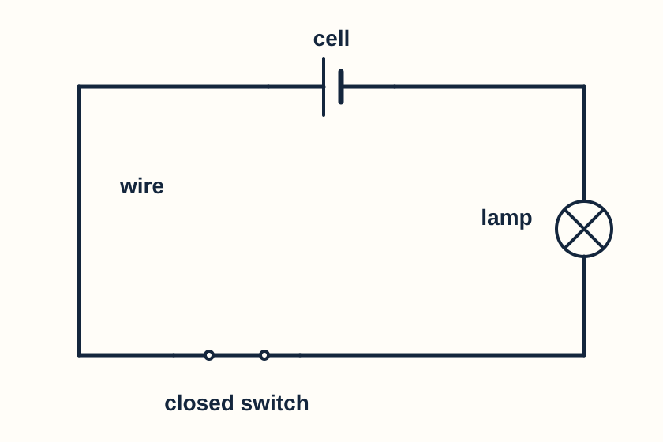
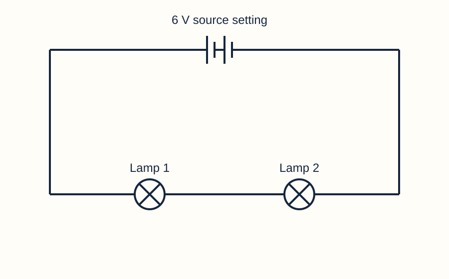
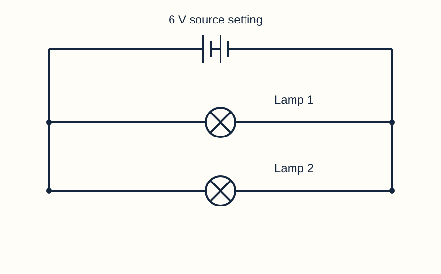
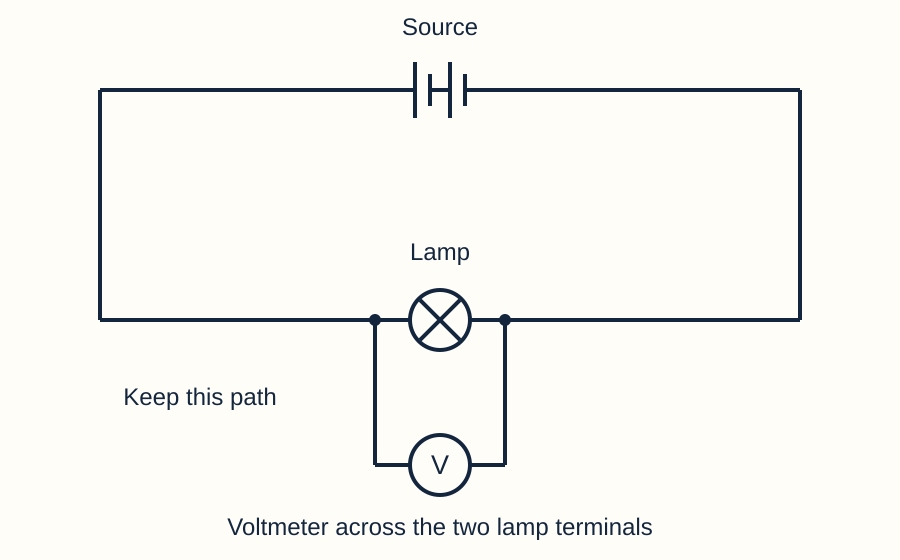

Year 7 · Current electricity · Help for everyone
Understand the ideas
Read or listen to one short explanation at a time.
Choose another resource
Keep this beside your lesson. Write and draw in your book or on a printed copy. You can explain aloud or direct a scribe. This page does not save answers.
Read or listen to one card. Find the matching feature in its diagram. Explain your answer before opening the review.
A complete path
A source transfers energy electrically.
Current flows through a complete conducting path.
In this circuit, opening the switch makes a gap. Current stops throughout the loop.
A lamp that is off does not prove that the source has no voltage.

Your turn
Point to a place where a gap would stop this lamp. Explain why.
Say your answer, point and explain, or write in your book.
Model answer & success criteria
A gap anywhere in this single loop removes the complete path. Steady current stops and the lamp goes out.
Success: Identify a wire or switch in the loop and explain the broken path.
Current and energy are different
Charge moves around a complete circuit. Current tells us how much charge passes a point each second.
The lamp transfers energy by light and heating. It does not use up charge.
Ammeters before and after the lamp have equal current magnitudes.

Your turn
An ammeter before a lamp reads 0.40 A. What should one after it read in the same single loop? Explain.
Say your answer, point and explain, or write in your book.
Model answer & success criteria
It should read 0.40 A. In steady state the same current passes every point in this single path; charge is not used up by the lamp.
Success: Give 0.40 A and distinguish charge from transferred energy.
Series: one path
Both lamps lie on the same path. The same current passes through both.
Adding another lamp in series increases total resistance. With the same source, current falls.
If this loop breaks, both lamps go out.

Your turn
Does moving a lamp symbol to the other side of the page make the circuit parallel? Explain.
Say your answer, point and explain, or write in your book.
Model answer & success criteria
No. It is still series if the connections leave one path through both lamps. Shape on the page does not determine the circuit arrangement.
Success: Refer to connections or paths, not the drawing’s shape.
Parallel: separate branches
Each lamp is in its own branch. Each branch has a complete route through the source.
At a junction, source current splits between the branches. Branch currents add to the source current.
Opening only one branch can leave the other lamp on. A break in the common supply path stops both.

Your turn
Branch currents are 0.20 A and 0.35 A. Find the source current. Must branches always share current equally?
Say your answer, point and explain, or write in your book.
Model answer & success criteria
The source current is 0.55 A. Branches do not have to carry equal currents; their resistances can differ.
Success: Add both readings and reject the claim that sharing is always equal.
Voltage: energy per charge
Potential difference is also called voltage. It means energy transferred per unit charge between two points.
Across a lamp, 3 V means 3 joules of energy transferred per coulomb of charge.
Use a voltmeter across two points. For an ideal series circuit, the voltage drops add to the supply voltage. Parallel branches between the same two points have the same voltage.

Your turn
An ideal 6 V source supplies two series components. One has 2 V across it. What is across the other? Explain.
Say your answer, point and explain, or write in your book.
Model answer & success criteria
The other has 4 V, because 2 V + 4 V = 6 V in this ideal series loop. The voltage need not split equally.
Success: Give 4 V with a sum matching the source; do not assume equal sharing.
A model helps us think
The simulator calculates a model of a circuit. Its lamps have fixed resistance, while real filament resistance changes as the lamp heats.
Its source and wires have small resistances, so measurements can differ slightly from ideal textbook answers.
The moving markers show relative conventional current. They do not show the speed at which an electrical signal travels.
Keep Heat & damage off for comparisons. Its optional smoke and failure effects illustrate risk; they do not predict real temperatures or failure times.